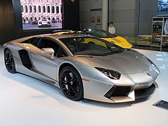
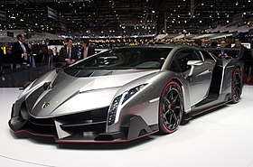
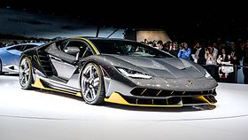

Lamborghini Aventador
| Lamborghini Aventador LP 700-4 |
|
|---|---|
|  | |
| Overview | |
| Manufacturer | Lamborghini |
| Production | February 2011–present |
| Assembly | Sant'Agata Bolognese, Italy |
| Designer | Filippo Perini |
| Body and chassis | |
| Class | Sports car (S) |
| Body style | 2-door coupé 2-door roadster |
| Layout | Longitudinal mid-engine, all-wheel-drive |
| Doors | 2 |
| Powertrain | |
| Engine | 6.5 L L539 V12 |
| Transmission | 7-speed ISR Semi-automatic transmission |
| Dimensions | |
| Wheelbase | 2,700 mm (106.30 in) |
| Length | 4,780 mm (188.19 in) |
| Width | 2,030 mm (79.92 in) (w/mirrors: 2,265 mm (89.17 in))[1] |
| Height | 1,136 mm (44.72 in) |
| Curb weight | |
| Chronology | |
| Predecessor | Lamborghini Murciélago |
The Lamborghini Aventador is a mid-engined sports car produced by the Italian manufacturer Lamborghini.
Launched on 28 February 2011 at the Geneva Motor Show, five months after its initial unveiling in Sant'Agata Bolognese, the vehicle, internally codenamed LB834, was designed to replace the then-decade-old Murciélago as the new flagship model.[5][6][7]
Soon after the Aventador unveiling, Lamborghini announced that it had already sold over 12 of the production vehicles, with deliveries starting in the second half of 2011.[8] By March 2016, Lamborghini had already built 5,000 Aventadors, taking five years to achieve this milestone.[9]
Contents
Background[edit]
In keeping with Lamborghini tradition, the Aventador is named after a fighting bull. Aventador (pronounced [aβentaˈðoɾ]) was a bull that fought particularly valiantly in the bull ring of Zaragoza, Spain in 1993.[10][11] The bull which the Aventador is named after earned the Trofeo de la Peña La Madroñera for its courage in the arena.[12]
Aventador LP 700-4[edit]
_(cropped).jpg)
_LP_700-4_coupe_(2012-10-26)_01.jpg){kind=link}
.jpg){kind=link}
Production of the Aventador was planned to be limited to 4,000 vehicles (4,099 Murciélagos were built); however, in 2016, it achieved the 5,000 unit milestone. The molds used to make the carbon-fibre monocoque are expected to last 500 molds each and only 8 have been made. The base price of the Aventador is US$393,695.[13]
The car's shape borrows heavily from Lamborghini's limited-edition Reventón and their Estoque concept car.
The vehicle was unveiled at Lummus Park, Miami, followed by Miami International Airport,[14] followed by Auto China 2014 (with Nazionale configuration via Lamborghini Ad Personam personalization program).[15]
The Lamborghini Aventador starred in Transformers: Age of Extinction as Lockdown, the film's main antagonist.
Specifications[edit]

Engine[edit]
The Aventador LP 700–4 uses Lamborghini's new 700 PS (510 kW; 690 bhp) 6.5 litre 60° V12 engine weighing 235 kg. Known internally as the L539,[6] the new engine is Lamborghini's fourth in-house engine and second V12 design. It is the first all-new V12 since the 3.5 litre powerplant found in the 350GT.[16]
| Displacement | 6,498 cc (396.5 cu in) |
| Max. power | 700 PS (510 kW; 690 bhp) @ 8,250 rpm |
| Power to weight | 432 PS (318 kW; 426 bhp) per tonne |
| Max. torque | 689 N·m (508 lb·ft) @ 5,500 rpm |
| CO2 emissions | 398 g/km |
| Combined fuel consumption | 17.2 L/100 km (16.4 mpg‚Äëimp; 13.7 mpg‚ÄëUS)[17] |
Performance[edit]
- 0–97 km/h (0–60 mph): 2.9 s[18]
- 400 m (1‚ÅÑ4 mi): 10.6 s @ 220 km/h (137 mph)
- Top speed: Official: 354 km/h (220 mph)[18][19] measured by Sport Auto magazine: 370 km/h (230 mph)[20]
- 97–0 km/h (60–0 mph): 30 m (100 ft)[citation needed]
- Cornering - 1.05g.[citation needed]
Its transmission, a single-clutch seven-speed semi-automatic, is built by Graziano Trasmissioni.[21][22] Despite being single-clutch, gear-shifts are accomplished in 50 milliseconds.
The new, electronically controlled, all-wheel drive system is developed and supplied by the Swedish company Haldex Traction, offering traction[23] and handling capabilities based on their 4th generation technology.[24]
Lamborghini Aventador LP700-4 has a power to weight ratio of 2.25 kg (4.96 lb) per horsepower.
Aventador LP 700-4 Roadster[edit]
{kind=link}
The 2013 Aventador LP 700-4 Roadster was announced for production on 27 December 2012, equipped with the same V12 engine as the coupé version, Lamborghini claims again that it can reach 97 km/h (60 mph) in less than 3 seconds and a top speed of more than 350 km/h (217 mph).[25]
The removable roof consists of two carbon fiber panels, weighing 6 kg (13 lb) each, which required the reinforcement of the rear pillar to compensate for the loss of structural integrity as well as to accommodate the rollover protection and ventilation systems for the engine. The panels are easily removable and are stored in the front luggage compartment. The Aventador Roadster has a unique engine cover design and an attachable wind deflector to improve cabin airflow at high speed as well as a gloss black finish in the A-pillars, windshield header, roof panels, and rear window area. The car has a US$441,600 base price. With a total weight of 1,625 kg (3,583 lb) it's only 50 kg (110 lb) heavier than the coupé (the weight of the roof, plus additional stiffening in the sills and A-pillars).[26][27][28]
Special editions[edit]
Aventador J[edit]
{kind=link}
Six months after unveiling the Aventador, plans for a roadster version were leaked by the U.S. EPA after it included the model on a data sheet on its website. Lamborghini officially unveiled the Aventador J to the world at the 2012 Geneva Motor Show.[29] The roofless and windowless concept car uses the same V12 engine as the standard Aventador, producing 700 hp through a lightweight seven-speed automated transmission. The car does not have air conditioning or radio to save further weight for a total of 3,472 pounds (1,575 kg).[30][31] The car presented at the Geneva show was the only unit to be produced, and was sold for US$2,800,000. Another Limited Edition model was made for Shaikh Al Yahyaa and was sold at an unknown price. The car was specially made for a close relation.[32]
The J designation was thought to have come from Appendix J in the FIA rulebook that describes the technical specifications of race cars.[33] However, during an interview with designer Filippo Perini, it was revealed that the 'J' actually stands for Jota, in reference to a 1970s one off Lamborghini Miura Jota, which also conformed to the FIA's Appendix J regulations.
Dreamliner Edition (2012)[edit]
Dreamliner is a version of Aventador LP 700-4 coupé with blue and white body colour scheme from Boeing 787 Dreamliner, and pitch-black wheels. The vehicle was unveiled in 2012 Aerospace & Defense Supplier Summit.[34]
Aventador LP 720-4 50° Anniversario (2013)[edit]
.jpg){kind=link}
The Aventador LP 720-4 50° Anniversario is a limited (200 units - 100 Coupe and 100 Roadster) version of the Aventador LP 700-4 commemorating the 50th anniversary of Automobili Lamborghini. It included increased engine power to 720 PS (530 kW; 710 bhp) via a new specific engine calibration, enlarged and extended front air intakes and the aerodynamic splitter, small flaps set into the sides, new rear end featuring an enlarged diffuser and expansive meshwork that further improves engine-compartment ventilation, model-exclusive Giallo Maggio (Italian for "May yellow") body colour featuring sparkling yellow paintwork with a layer of transparent and highly reflective particles; front and rear and sills in two-tone (Giallo Maggio and matte black) design, semi-aniline leather interior upholstery in Nero Ade (black) with Terra Emilia (optional Giallo Quercus (yellow)) with Q-Citura stitch diamond pattern, 50th anniversary emblem in forged composite carbon-fiber. The base price of the Aventador LP 720-4 50° is US$548,000 which is US$106,300 more than the Aventador Roadster.
The coupe was unveiled in 2013 Shanghai Motor Show.[35][36]
The roadster was unveiled in 2013 Quail Motorsports Gathering.[37]
Aventador airport vehicle (2013)[edit]
An Aventador was made for Bologna Airport with white body colour, red and white chequered flag decals on the sides, a light bar on the roof and 'FOLLOW ME' written on the bonnet.
The vehicle was unveiled in Bologna Airport between 6 May 2013 and 19 May 2013 and was used to guide aircraft around the airport.[38] It was also used in Heathrow Airport, London, as an airport vehicle for a single day.[39]
Aventador Pirelli Edition (2014)[edit]
The Lamborghini Aventador LP 700-4 Pirelli Edition was announced in December 2014. Celebrating a 50-year association between Lamborghini and Pirelli, it features a design and colour scheme that echoes the Pirelli tyre, with a thin red stripe running across the roof.[40]
Aventador LP 750-4 SuperVeloce (2015)[edit]
.jpg){kind=link}
The Lamborghini Aventador LP 750-4 Superveloce was announced at the March 2015 Geneva Motor Show. It features an upgraded powertrain, with maximum horsepower increased to 750 PS (552 kW; 740 bhp) from the standard coupé's 700 PS (515 kW; 690 bhp). Combined with weight reduction of 50 kg (110 lb) from increased usage of carbon fiber both inside and outside the car the LP 750-4 SV has a power to weight ratio of 1 hp to 2 kg. The car also features improved aerodynamics, with downforce increased by 180% as compared to the standard Aventador coupé. Notable aerodynamic upgrades are a revised front splitter and rear diffuser, and a rear wing. The car is available in 34 base colours.[41] The car's driving dynamics have also been upgraded, featuring new enhanced electronic steering for superior maneuverability at high speeds, magnetic pushrod suspension for superior handling, and chassis improvements to increase rigidity. Overall the LP 750-4 SV's standing 0–100 km/h (0–62 mph) time is decreased from 2.9 seconds to 2.8 seconds, with the theoretical top speed still "somewhere in excess" of 350 km/h (217 mph). Delivery of the car began in the second quarter of 2015.[42] Road & Track recorded a 0–241 km/h (0–150 mph) time of 12.8 seconds, a 0–322 km/h (0–200 mph) time of 33.5 seconds, and a 0-402m (¼-mile) trap speed of 227.4 km/h (141.3 mph) in the March 2016 0–322 km/h (0–200 mph) shootout.[43]
Lamborghini Aventador LP750-4 SuperVeloce has a power to weight ratio of 2.03 kg (4.48 lb) per horsepower.
Aventador LP 750-4 SuperVeloce Roadster (2016)[edit]
{kind=link}
Lamborghini Aventador LP 750-4 SuperVeloce Roadster was unveiled at the 2015 Pebble Beach Concours d'Elegance. It features a compact two-piece carbon fiber hard top that can be stowed in the trunk like the previous roadster. Numerous weight-saving measures have lowered the Roadster’s weight to 1,575 kg (3,472 lb), a figure that makes it 50 kg (110 lb) lighter than the regular. In the US it is expected to be priced from US$530,075 excluding tax.[44] Deliveries began in the first quarter of 2016.[45]
Aventador LP 740-4 S (2016)[edit]
{kind=link}
The Lamborghini Aventador S was revealed on 19 December 2016[46]. The 6.5 litre V12 engine now produces 740 PS (544 kW; 730 bhp) at 8,400 rpm (40 PS more than the standard Aventador) and 690 N·m (509 lb·ft) at 5,500 rpm.[47] The performance figures are the same as the standard Aventador.
The S received four wheel steering, permanent four wheel drive and a slightly updated suspension. The suspension is controlled by the ‘Lamborghini Dinamica Veicolo Attiva’ (LDVA) control unit. The LDVA has four selectable modes – Sport, Strada, Corsa and Ego (i.e. individual). Carbon ceramic brakes are standard (front: 400 mm, rear: 380 mm).[48]
.jpg){kind=link}
The nose was redesigned with a bigger front splitter and two new air ducts in the front bumper. At the rear it has a new black rear diffuser with fins, and three single exit exhausts tips. It has 130 percent more front downforce than the standard Aventador.[48]
Reception[edit]
{kind=link}
Automotive magazines such as Car and Driver and Motor Trend reviewed the Aventador. Car and Driver titled their article "The best Lamborghini ever." Motor Trend described it as "the friendliest V-12 supercar in the world." Praise for Lamborghini's all-new V-12 powerplant centered on the engine's responsiveness, torque, and smooth power output. Criticism centered mainly around the Aventador's unrefined single-disc clutch.[49][50]
On 31 July 2011, the Aventador was reviewed by the motorsport show Top Gear. Host Richard Hammond was impressed with the performance and handling of the car. His biggest complaint was a nostalgic poke at the Aventador's accessible temperament, implying that it left him longing for the "danger" associated with driving previous Lamborghini supercars.[51] The Aventador posted the fifth fastest time ever recorded on the Top Gear test track with a time of 1:16.5, beating the US$2,000,000 Bugatti Veyron Super Sport, the Ferrari Enzo, the Porsche 911 GT3, and other supercars from around the world. In season 18 of the programme, presenter Jeremy Clarkson said that the Aventador is better than the Ferrari 458 Italia (which they had previously called the best supercar ever), describing it as being "£200,000 worth of dreams."[52] The Aventador won the "Supercar of the Year 2011" from Top Gear.
Marketing[edit]
Robert Gülpen of RGE Robert Gülpen Engineering GmbH produced a 1/8-scale model Aventador LP 700-4 that was sold through an auction December 2011 with starting bid price of US$4,700,000 (€3,500,000).[53] A second model, featuring gold wrapping at body, was set to go for sale at auction with a starting bid price of US$7,500,000.[54]
BMC Switzerland produced a limited (50 units) edition of Lamborghini 50th Anniversary Edition impec bicycles inspired by the Lamborghini Aventador. The vehicle was sold for US$32,000 (€25000) via international BMC or Lamborghini dealer network, with delivery done by the dealer.[55]
Aventador-based limited production specials[edit]
Veneno[edit]
| Lamborghini Veneno | |
|---|---|
|  | |
| Overview | |
| Manufacturer | Automobili Lamborghini S.p.A |
| Production | 2013-2014 |
| Assembly | Sant'Agata Bolognese, Italy |
| Body and chassis | |
| Class | Sports car (S) |
| Body style | 2-door coupé 2-door roadster |
| Layout | Mid-engine, all-wheel-drive |
| Powertrain | |
| Engine | 6.5 L V12 |
| Transmission | 7-speed semi-automatic |
| Dimensions | |
| Wheelbase | 2,700 mm (106.30 in) (Roadster) |
| Length | 5,020 mm (197.64 in) (Roadster) |
| Width | 2,075 mm (81.69 in) (Roadster) |
| Height | 1,165 mm (45.87 in) (Roadster) |
| Curb weight |
1,490 kg (3,280 lb) (Roadster; dry) 1,450 kg (3,200 lb) (Coupe; dry) |
{kind=link}
The Lamborghini Veneno is a limited production supercar based on the Lamborghini Aventador and was built to celebrate Lamborghini’s 50th anniversary. When introduced in 2013 at a price of US$4,500,000, it was the most expensive production car in the world.[56] The prototype, Car Zero, is finished in grey and includes an Italian flag vinyl on both sides of the car. The engine is a development of the Aventador's 6.5 L V12 and produces 750 PS (552 kW; 740 bhp).[57][58]
Lamborghini built just five examples of the Veneno: One for factory testing, one was kept for itself and three were for customers. Car Zero, which was the vehicle on display,[59] will be retained by the factory for the museum. The three production cars cost €3,120,000 each, and all three were sold.[60]
The vehicle number 0 was unveiled at the March 2013 Geneva Motor Show,[61] followed by 2013 Quail Motorsports Gathering,[61] Vallelunga circuit near Rome during the World Finals of Lamborghini Super Trofeo 2013 series.[62] There's another number 0 Veneno prototype test car.[63]
The Lamborghini Veneno has an electronically limited top speed of 354 km/h (220 mph), can do 0–97 km/h (0–60 mph) in 2.8 seconds, can brake 97–0 km/h (60–0 mph) in 30 m (98.0 ft), and corners at 1.41 G.[citation needed]
Lamborghini Veneno has a weight to power ratio of 1.93 kg (4.25 lb) per horsepower. This figure is also stated on the official Lamborghini website.
| Car Zero | ||
|---|---|---|
|
{kind=link}
Veneno Roadster (2014)[edit]
The Veneno Roadster is a limited (maximum 9 units during 2014) version of the Lamborghini Veneno, commemorating the 50th anniversary of Automobili Lamborghini. It has exclusive alloy wheels, Rosso Veneno (red) body colour and 2 bucket seats made in forged composite, woven carbon-fibre carbonSkin interior upholstery. The Veneno Roadster has a top speed of 356 km/h (221 mph) and goes from 0–100 km/h (0–62 mph) in 2.9 seconds.[64]
The vehicle was unveiled on the Italian naval aircraft carrier Cavour docked in Abu Dhabi's Mina Zayed port,[65][66] followed by the 2014 Las Vegas Consumer Electronics Show.[67]
The roadster went on sale for €3,300,000 (excluding tax).[68]
Centenario[edit]
| Lamborghini Centenario | |
|---|---|
|  | |
| Overview | |
| Manufacturer | Automobili Lamborghini S.p.A |
| Production | 2016 |
| Assembly | Sant'Agata Bolognese, Italy |
| Body and chassis | |
| Class | Sports car (S) |
| Body style | 2-door coupé 2-door roadster |
| Layout | Mid-engine, all-wheel-drive |
| Powertrain | |
| Engine | 6.5 L V12 |
| Transmission | 7-speed semi-automatic |
| Dimensions | |
| Wheelbase | 2,700 mm (106.3 in) |
| Length | 4,924 mm (193.9 in) |
| Width | 2,062 mm (81.2 in) |
| Height | 1,143 mm (45.0 in) |
| Curb weight | 1,520 kg (3,351 lb) - Coupe (dry) 1,570 kg (3,461 lb) - Roadster |
{kind=link}
To commemorate Ferruccio Lamborghini's 100th birthday, Lamborghini released a limited-edition supercar based on the Aventador at the March 2016 Geneva Motor Show.[69] 40 cars (20 coupes and 20 roadsters) were produced, all of which have been sold.[70] Contrary to the rest of Lamborghini's lineup, the Centenario's design was rumored to be "not as extreme" compared to other wedge-shaped supercars.[71] Power comes from a tuned version of the Aventador's 6.5-litre V12 producing 759 hp (770 PS), a hybrid powertrain is possible. The car, which costs just under €2,200,000, was unveiled at the March 2016 Geneva Motor Show.[72]
Lamborghini Centenario has a power to weight ratio of 1.97 kg (4.34 lb) per horsepower.
Centenario Roadster (2016)[edit]
In the same year, Lamborghini unveiled the Centenario LP 770-4 Roadster. The only changes in design are the open top and rear engine door. The first unit made has simple light silver paintwork. The weight of the car has also increased, now set at 1,570 kg (3,461 lb).[73]
{kind=link}
{kind=link}
{kind=link}
{kind=link}
Production[edit]
The first 1,000 Aventadors were built in 15 months.[74][75]
| Year | Units | Coupé | Roadster |
|---|---|---|---|
| 2011[76] | 447 | 447 | – |
| 2012[76] | 976 (922 deliveries[77]) | 958 | 18 |
| 2013[78] | 1,113 (1,001 deliveries[78]) | 710 | 403 |
| 2014[79] | 1,110 (1,128 deliveries[80]) | 456 | 654 |
| 2015[81] | 1,079 (1,003 deliveries[82]) | 666 | 413 |
| Total | 4,725 | 3,237 | 1,488 |
References[edit]
- ^ "Official website for the Lamborghini Aventador". Retrieved 4 March 2011.
- ^ Lago, Carlos (30 January 2012). "2012 Lamborghini Aventador LP 700-4 European Spec First Test". Motor Trend. Retrieved 4 February 2016.
- ^ "2012-Lamborghini-Aventador-LP700-4-specs" (PDF). Car and Driver. Retrieved 4 February 2016.
- ^ Evans, Scott (15 February 2016). "2015 Lamborghini-Avenatdor SV First Test". Motor Trend. Retrieved 7 March 2016.
- ^ di Andrea Zuanni (17 November 2010). "Lamborghini: tutti i dettagli e i video del nuovo V12 – Tecnica". Motori.it. Retrieved 21 July 2011.
- ^ a b "2012 Lamborghini Aventador LP700-4: In Depth". Autoblog. 28 February 2011. Retrieved 1 March 2011.
- ^ "2012 Lamborghini LP700-4 Aventador". CoverCars. 25 February 2011. Retrieved 25 February 2011.
- ^ "Lamborghini Aventador Sold Out". Insideline.com. 9 March 2011. Retrieved 21 July 2011.
- ^ Harley, Michael (22 March 2016). "Lamborghini builds 5,000th Aventador, production rate continues to climb". Autoblog. Retrieved 11 November 2015.
- ^ Markus, Frank (February 2013). "Sant'Agata Bolognese to Zaragoza, the Heming-Way". Motor Trend. 65 (2): 106.
- ^ "Toros Notables" (in Spanish). Retrieved 6 July 2013.
- ^ Pulman, Ben (28 February 2011). "Lamborghini Aventador LP700-4 (2011) at 2011 Geneva motor show". CAR Magazine. UK. Retrieved 25 December 2016.
- ^ "Lambo set for 4000 Aventadors". autocar.co.uk. 10 March 2011. Retrieved 31 March 2011.
- ^ "Miami Calling" (Press release). Lamborghini. 25 January 2013. Retrieved 13 December 2013.
- ^ "Lamborghini reveals Aventador Nazionale in Beijing" (Press release). autoblog. 20 April 2014. Retrieved 13 December 2013.
- ^ Gritzinger, Bob (30 May 2011). "The Beatification of Lamborghini". AutoWeek. 61 (11): 20–23.
- ^ "Technical Specifications". Lamborghini. Retrieved 16 February 2013.
- ^ a b "2012 lamborghini aventador LP700-4". Top Speed. Retrieved 10 December 2012.
- ^ "Lamborghini Aventador LP 700-4: Technische Daten". Lamborghini. Retrieved 3 December 2013.
- ^ "Aventador TOP SPEED 370 km/h & Hockenheim Lap Test sport auto New Lamborghini LP 700-4". YouTube. 14 December 2011. Retrieved 28 September 2012.
- ^ "Lamborghini Aventador’s transmission comes from Italian specialists Oerlikon Graziano". Harry. Retrieved 31 March 2011.
- ^ "Oerlikon Graziano and Vocis Driveline Controls develop step change in transmission technology for new Lamborghini flagship". Oerlikon Graziano. 22 March 2011. Retrieved 31 March 2011.
- ^ "2012 Lamborghini aventador Lp700-4". Top Speed. Retrieved 10 December 2012.
- ^ Lamborghini Automobili. "Aventador LP 700–4 Technical Specification". Retrieved 13 October 2011.
- ^ Sanchez, Edward A. "First Look:2013 Lamborghini Aventador LP 700-4 Roadster". Motor Trend. Retrieved 25 December 2012.
- ^ Hudson, Paul (14 February 2013). "Lamborghini Aventador LP 700-4 Roadster review". Telegraph. UK. Retrieved 20 October 2013.
- ^ Ross, Jeffrey N. (15 November 2012). "Lamborghini Aventador LP 700-4 Roadster priced from $441,600 for US". Autoblog. Retrieved 20 October 2013.
- ^ Neil, Dan (4 April 2013). "2013 Lamborghini Aventador Roadster Review: For the Tall Driver in a Huge Hurry". WSJ.com. Retrieved 20 October 2013.
- ^ "Lamborghini Aventador J unveiled". Caradvice.com.au. 2012. Retrieved 6 March 2012.
- ^ "Lamborghini Aventador J 2012". DieselStation.com. 14 March 2012. Retrieved 14 March 2012.
- ^ "Lamborghini Aventador J at Geneva 2012". Automoblog.net. 7 March 2012. Retrieved 8 March 2012.
- ^ Migliore, Greg (6 March 2012). "Lamborghini Aventador J sells for $2.8 million". Autoweek. Retrieved 16 February 2013.
- ^ Migliore, Greg (5 March 2012). "Aventador J: Lamborghini goes topless at Geneva auto show". Autoweek. Retrieved 16 February 2013.
- ^ "Boeing and Lamborghini Create Aventador Dreamliner Edition". Car Buzz. 14 March 2012. Retrieved 22 April 2013.
- ^ "2014 LP 720-4 Announced". 17 April 2013. Retrieved 17 April 2013.
- ^ Ramsey, Jonathon (20 April 2013). "2013 Lamborghini Aventador LP720-4 50 Anniversario is indeed worth celebrating - Autoblog". Auto Blog. Retrieved 3 December 2013.
- ^ "Lamborghini unveils 50th anniversary Aventador Roadster and Gallardo". Autoblog. 17 August 2013. Retrieved 4 October 2014.
- ^ Tutu, Andrei (9 May 2013). "Lamborghini Aventador Becomes Bologna Airport Vehicle". autoevolution. Retrieved 31 July 2013.
- ^ Read, Dan (24 October 2013). "Top Gear runs Heathrow Airport for a day". Top Gear.
- ^ "Lamborghini Aventador Pirelli Edition". HROwen. 19 December 2014. Retrieved 27 February 2015.
- ^ "Black, red, yellow - Colors Configurator for new Lamborghini Aventador LP750-4 SV". AutoYa. Ukraine. Retrieved 15 January 2015.
- ^ Ireson, Nelson (4 March 2015). "Lamborghini Aventador LP 750-4 SuperVeloce Revealed In Geneva". Motor Authority. US. Retrieved 15 January 2017.
- ^ "Acceleration test results". Road & Track. US. 15 March 2016. Retrieved 15 January 2017.
- ^ Ewing, Steven J. (14 August 2015). "Lamborghini Aventador LP 750-4 SV Roadster drops its top at the Quail". Autoblog. Retrieved 25 December 2016.
- ^ "Our first SV Roadster ready to go to a very happy client!". Gold Coast Auto Gallery. 14 February 2016. Retrieved 25 December 2016 – via Instagram.
- ^ Fung, Derek (20 December 2016). "2017 Lamborghini Aventador S revealed, Australian pricing confirmed: Facelifted hero gets more power, four-wheel steering". Car Advice. Australia. Retrieved 24 August 2017.
- ^ "Lamborghini Aventador S Coupé". Lamborghini. Retrieved 25 December 2016.
- ^ a b Pattni, Vijay (19 December 2016). "This is the new 730bhp Lambo Aventador S". Top Gear. UK. Retrieved 25 December 2016.
- ^ Robinson, Aaron (December 2011). "The Best Lamborghini Ever". Car and Driver. Retrieved 16 February 2013.
- ^ Lago, Carlos (30 January 2012). "2012 Lamborghini Aventador LP 700-4 European Spec First Test". Motor Trend. Retrieved 16 February 2013.
- ^ "Top Gear". Series 17. Episode 6. 31 July 2011. BBC 2.
- ^ "Power Laps". BBC. Retrieved 16 February 2013.
- ^ Korzeniewski, Jeremy (17 September 2011). "Lamborghini Aventador 1:8 scale model costs 12 times the real thing". Autoblog. Retrieved 12 October 2013.
- ^ Lowney, Damon (19 September 2013). "World's most expensive model car will be wrapped in thin gold sheet". Autoblog. Retrieved 12 October 2013.
- ^ "Latest ultra-light Lamborghini only costs around $32,000". Autoblog. 11 March 2013. Retrieved 4 October 2014.
- ^ Henry, Jim (19 December 2013). "10 Most Expensive Cars Of 2014: Keeping Up With The 1 Percent". Forbes. Retrieved 1 July 2015.
- ^ Tisshaw, Mark (5 March 2013). "Geneva motor show: Lamborghini Veneno". Autocar. Retrieved 18 March 2013.
- ^ "A unique triple-pack: the new Lamborghini Veneno" (Press release). Lamborghini. Retrieved 3 December 2013.
- ^ Read, Dan (4 March 2013). "This is the Lamborghini Veneno". topgear.com. Retrieved 6 March 2013.
- ^ "2013 Lamborghini Veneno". 6 March 2013. Retrieved 20 March 2013.
- ^ a b Korzeniewski, Jeremy (4 March 2013). "Lamborghini Veneno finally, officially unveiled". autoblog. Retrieved 8 August 2014.
- ^ Joseph, Noah (25 November 2013). "Lamborghini takes Veneno out to play on wet Vallelunga". autoblog. Retrieved 8 August 2014.
- ^ Bragman, Aaron (4 March 2013). "Lamborghini Veneno: First Look". cars.com. US. Retrieved 6 April 2017.
- ^ "Bullissimo!". Square Mile. 26 September 2014. Archived from the original on 8 January 2014. Retrieved 26 September 2014.
- ^ Turkus, Brandon (3 December 2013). "Lamborghini Veneno Roadster stands in for fighter jet aboard Italian carrier". autoblog. Retrieved 8 August 2014.
- ^ "Lamborghini World Premiere of Veneno Roadster" (Press release). Lamborghini. 3 December 2013. Retrieved 8 August 2014.
- ^ "Meet The Lamborghini Veneno Roadster at the CES 2014 in Las Vegas" (Press release). Lamborghini. 7 January 2014. Retrieved 8 August 2014.
- ^ Joseph, Noah (20 October 2013). "Lamborghini officially reveals new Veneno Roadster". autoblog. Retrieved 8 August 2014.
- ^ Joseph, Noah (1 December 2015). "Lambo to mark founder's birth with limited-run supercar in Geneva". Autoblog. Retrieved 16 January 2016.
- ^ Gnaticov, Cristian (14 January 2016). "Lamborghini "Centenario" Has Been Reportedly Sold Out". Carscoops. Retrieved 16 January 2016.
- ^ Vijayenthiran, Viknesh (2 December 2015). "More Details On Lamborghini’s Centenario Special Edition Supercar". Motor Authority. Retrieved 16 January 2016.
- ^ Shehan, Sam (4 March 2016). "Lamborghini Centenario – Geneva's 759bhp V12 supercar in detail". Autocar. Haymarket Media Group. Retrieved 22 May 2016.
- ^ Seyers, Mark (20 August 2016). "Centenario LP770-4 Roadster". LamboCARS. Retrieved 5 March 2017.
- ^ John Neff (19 July 2012). "Lamborghini celebrates assembly of 1,000th Aventador". autoblog.com. Retrieved 23 July 2012.
- ^ Jake Holmes (19 July 2012). "Lamborghini Builds 1000 Aventador LP700-4 Supercars in 15 Months". motortrend.com. Retrieved 23 July 2012.
- ^ a b "Volkswagen AG Annual Report 2012, p.109" (PDF). Retrieved 16 March 2013.
- ^ "Aventador sales drive record revenue at Lamborghini". Autoblog. 11 March 2014. Retrieved 4 October 2014.
- ^ a b "Volkswagen Group Annual Report 2013, p.27" (PDF). Retrieved 30 March 2014.
- ^ "Volkswagen Group Annual Report 2014, p.59" (PDF). Retrieved 19 March 2015.
- ^ "Audi Annual Report 2014, p.167" (PDF). Retrieved 19 March 2015.
- ^ "Volkswagen Group Annual Report 2015, p.27" (PDF). 28 April 2016. Retrieved 19 July 2016.
- ^ "Audi Annual Report 2015, p.160" (PDF). Retrieved 19 July 2016.
{kind=link}
External links[edit]
| Wikimedia Commons has media related to Lamborghini Aventador. |
|
¬´ previous Lamborghini road car timeline, 1990 to date
|
|||||||||||||||||||||||||||||
|---|---|---|---|---|---|---|---|---|---|---|---|---|---|---|---|---|---|---|---|---|---|---|---|---|---|---|---|---|---|
| 1990s | 2000s | 2010s | |||||||||||||||||||||||||||
| 0 | 1 | 2 | 3 | 4 | 5 | 6 | 7 | 8 | 9 | 0 | 1 | 2 | 3 | 4 | 5 | 6 | 7 | 8 | 9 | 0 | 1 | 2 | 3 | 4 | 5 | 6 | 7 | ||
| Owner | Audi AG | ||||||||||||||||||||||||||||
| Mid-engine | V10 | Gallardo | Hurac√°n | ||||||||||||||||||||||||||
| SE | |||||||||||||||||||||||||||||
| V12 | Diablo | Murciélago | Aventador | ||||||||||||||||||||||||||
| Reventón | Veneno | Centenario | |||||||||||||||||||||||||||
| Front/4WD | V12 | LM002 | |||||||||||||||||||||||||||